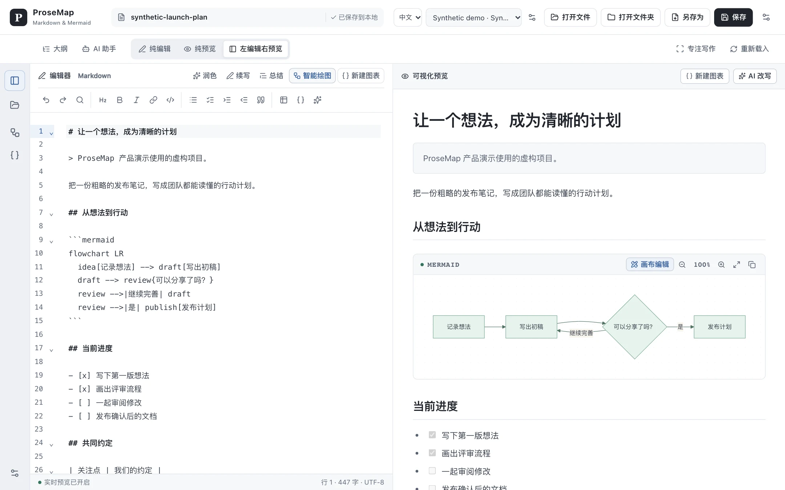
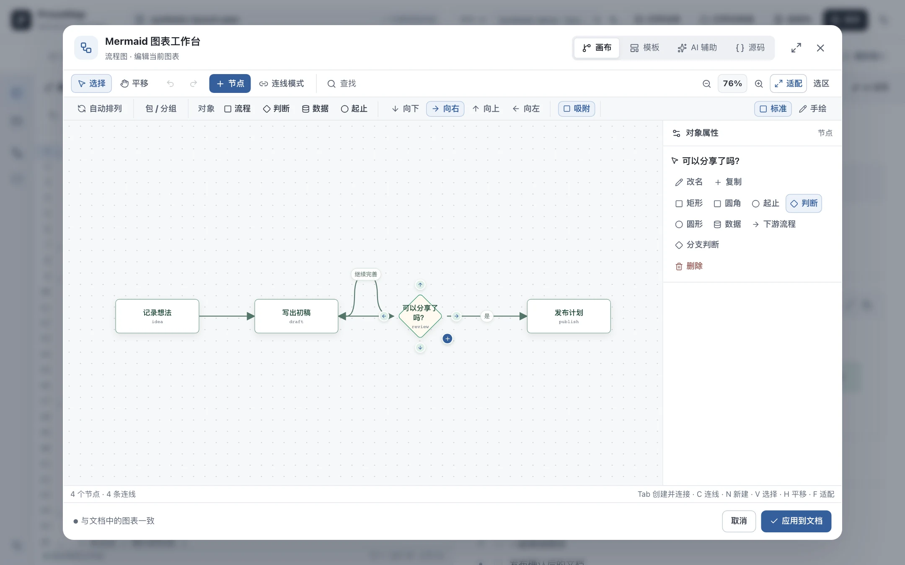
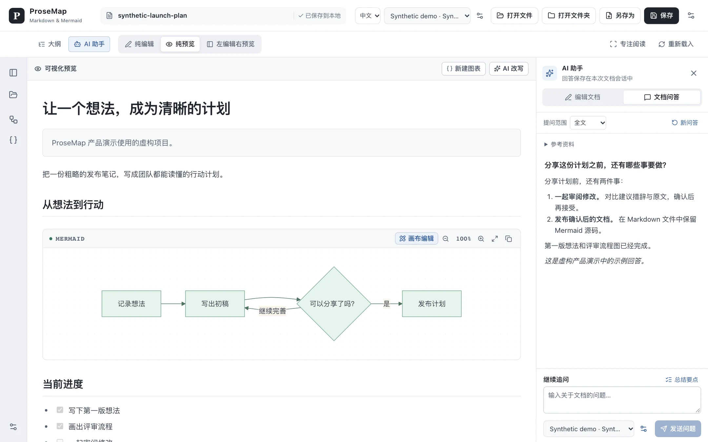
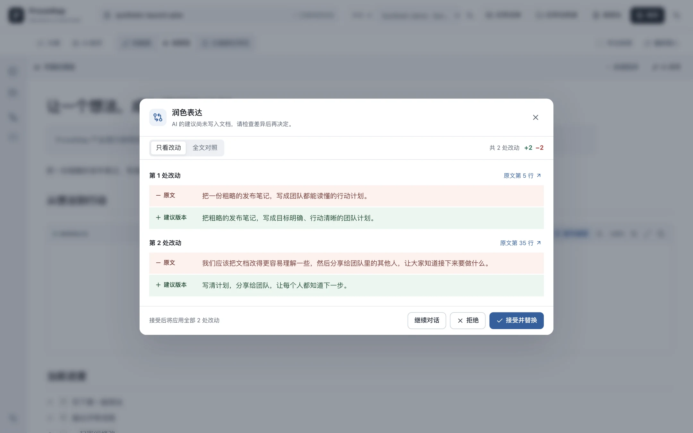

把想法写清楚，
把结构画明白。
本地优先的 Markdown 与 Mermaid 桌面编辑器。
在同一份文件里写作、画图、审阅修改。
v0.16.0 · 桌面预览版 · MIT 开源
一份文档，让思路自在展开。

放大查看界面跟上你的思路。
左边写 Markdown，右边看实时效果。需要安静想一想时，切入专注模式，只留下眼前这一段。

放大查看界面让结构一眼可见。
拖动节点，连接想法，在属性面板里调整细节。Mermaid 源码始终在旁，图和文字一起留在文档里。

放大查看界面读到哪里，问到哪里。
总结长文，解释选中的段落，继续追问。文档问答就在阅读区旁边，不必反复复制上下文。

放大查看界面每一次修改，都由你决定。
原文与建议逐段对照。接受整份建议、拒绝修改，或继续聊一聊，想清楚再落笔。
截图来自 v0.16.0 实际前端。文档与 AI 回答均为虚构示例，截图中的桌面文件操作使用模拟接口。
看得见的结构，
带得走的文件。
讲清系统架构，理顺业务流程，规划下一次发布。在可视化画布和 Mermaid 源码间切换，把文字与图表保存在同一份 Markdown 文件里。
Markdown 任务清单
## 当前进度
- [x] 写下第一版想法
- [x] 画出评审流程
- [ ] 一起审阅修改
- [ ] 发布确认后的文档同一份文件中的流程图

流程图 · 时序图 · 状态图 · 类图 · ER 图 · 思维导图 · 甘特图
一份虚构的发布计划。用 ProseMap 打开，试着改成你的想法。
AI 帮你向前一步，
决定权始终在你。
从空白页开始，润色一段话，或请 AI 换一种更清楚的说法。建议可以慢慢看，是否采用，由你来决定。
- 接上你选择的模型。
- 保存多组 OpenAI 兼容或 Anthropic 连接，写作时随时切换。
- 给它恰当的上下文。
- 从本地文件夹选择最多 12 个参考或源码文件。只有选中的文件会作为参考上下文。
- 先看改动，再替换。
- 逐段比较原文和建议，按需打开全文对照，然后决定是否接受。
我们应该把文档改得更容易理解一些，然后分享给团队里的其他人，让大家知道接下来要做什么。
写清计划，分享给团队，让每个人都知道下一步。
my-project/
├── launch-plan.md
└── images/
└── reference.png- 本地编辑、Markdown 预览和 Mermaid 渲染可以离线使用。
- 调用 AI 时，选定范围与参考内容会发送给你配置的模型服务。
- 正式应用的模型凭据保存在操作系统凭据库中。
开始之前，你可能想知道。
不配置 AI，也能使用吗？
可以。写作、本地文件、Markdown 预览和 Mermaid 渲染都不依赖 AI 连接。需要文档问答、文字建议或 AI 图表草稿时，再连接模型。
ProseMap 免费吗？
项目使用 MIT 许可证开源。AI 需要你自己的模型连接；模型服务商可能对请求计费，对话压缩也可能产生额外请求。
哪些内容留在本地，哪些会发送出去？
文档仍然是本地文件。主动调用 AI 时，选定的文档范围、参考文件、指令和相关对话会发送给你配置的服务商。选择文件夹不会把整个代码仓发送出去。
文件可以继续用其他工具打开吗？
可以。文档是 Markdown，图表保留 Mermaid 源码，粘贴的图片使用相对链接。手动画布位置只属于当前编辑会话；从源码渲染时使用自动布局。
当前版本成熟度如何？
v0.16.0 是桌面预览版，已完成前端和浏览器检查。这些检查使用虚构数据与桌面模拟接口，不能代表已安装桌面应用的完整验收，也不能验证真实模型输出质量。版本说明保留了尚未完成的原生验收状态。